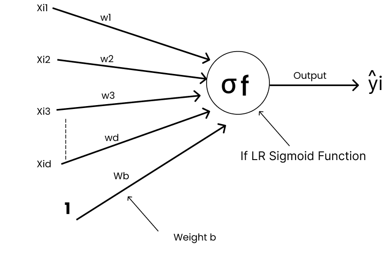
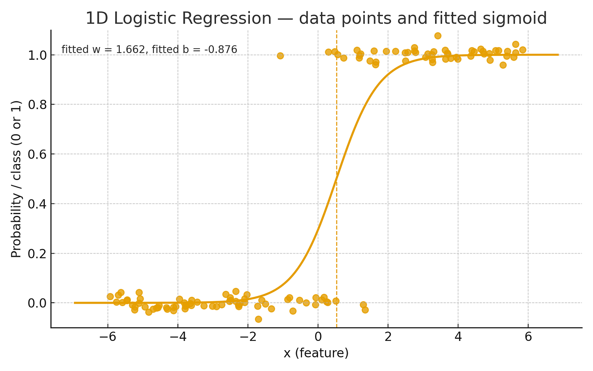
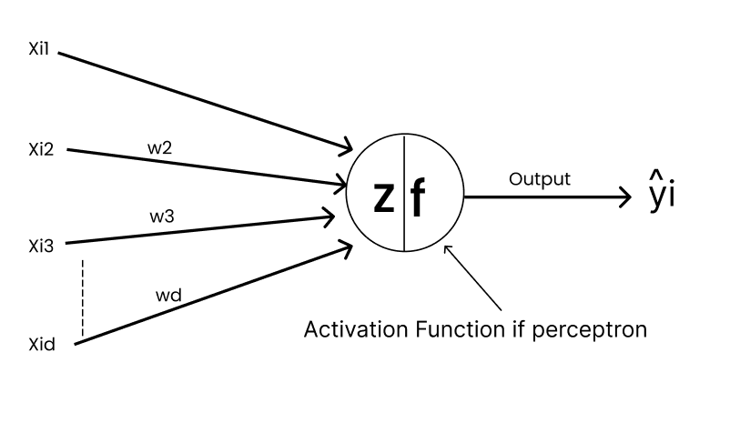
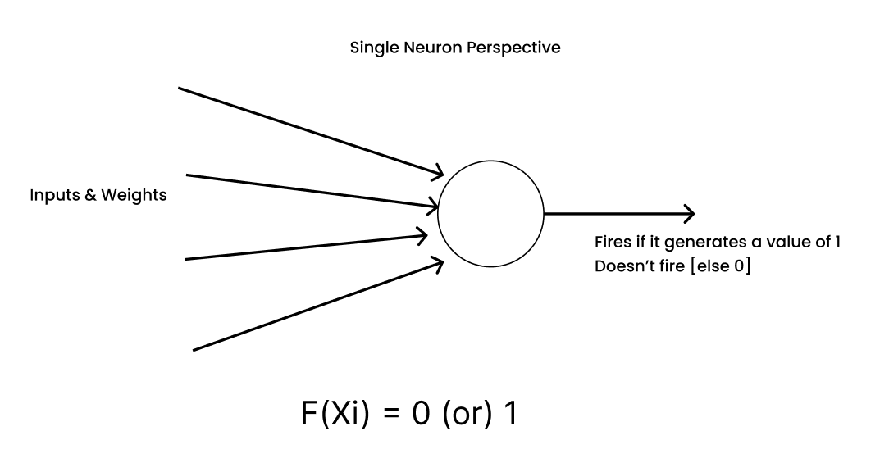

07 · Deep Learning
Perceptron vs logistic regression
The perceptron came from neuroscience and logistic regression came from statistics, in roughly the same era. Underneath, they are the same model with a different last step. Seeing why is the cleanest bridge from classical ML to neural networks.
It started with a question
"Can we mimic human behaviour within machines?" That question produced the single-neuron perceptron, which later grew into the multi-layer perceptrons (MLPs) behind today's neural networks. Statistics, meanwhile, had produced logistic regression. The two were developed separately, but they share one core idea.
The shared foundation: a weighted sum
Take a dataset D = {(Xᵢ, Yᵢ)} for i = 1 … n. Each Xᵢ = [xᵢ₁, xᵢ₂, …, xᵢd] is a d-dimensional vector (one data point) and Yᵢ is its class label. Both models learn a weight vector W = [w₁, …, wd] and a bias b, and both start the same way:
| Symbol | Meaning |
|---|---|
Xᵢ ∈ ℝᵈ | input feature vector (one data point) |
W ∈ ℝᵈ | weight vector: how much each feature matters |
b ∈ ℝ | bias: shifts the decision boundary |
z | the raw score, before any decision is made |
The only question left is: how do we turn z into a class decision? That one choice is the whole difference between the two models.
Logistic regression: one neuron with a sigmoid
Logistic regression passes z through the sigmoid, which squashes any number into the range 0 to 1:
The output is a probability: how likely it is that Xᵢ belongs to class 1. Seen as a neuron, logistic regression is a single neuron whose activation function is the sigmoid.


The perceptron: one neuron with a step
The perceptron (Rosenblatt, 1957 to 1958) computes the same z but uses a step function. The neuron either fires or it doesn't:


Geometrically, the perceptron learns a hyperplane W·X + b = 0 that splits the feature space in two. That is why it can solve linearly separable problems like AND and OR but fails on non-linear ones like XOR. Logistic regression has the same straight-line boundary, at σ(z) = 0.5, which is exactly where z = 0.
A switch vs a dimmer
Both models do the same linear computation. Their activation choice decides how they behave. The perceptron is a switch: on or off, with no sense of how sure it is. Logistic regression is a dimmer: the brightness shows how confident it is.
Try it · slide the score z
Perceptron · step(z)
Logistic regression · σ(z)
How they learn: almost the same rule
The two models also differ in their loss function, and that is where the "different loss, same intuition" idea comes from. Their update rules end up looking almost identical:
| Perceptron | Logistic regression | |
|---|---|---|
| Output | Hard label, 0 or 1 | Probability between 0 and 1 |
| Loss | Perceptron criterion: only misclassified points count | Log loss (binary cross-entropy): every point counts |
| Update (one example) | w ← w + η (y − step(z)) x | w ← w + η (y − σ(z)) x |
| When does it update? | Only when it is wrong | Always, more when it is more wrong |
| Convergence | Guaranteed only if the data is linearly separable; otherwise it can keep flipping | Convex loss, so gradient descent heads to the best boundary even with overlapping classes |
| Uncertainty | None: sharp, deterministic decisions | Yes: a calibrated-style confidence score |
Look at the update row: the only difference is step(z) vs σ(z). Replace the hard switch with a smooth dimmer, and the error term (y − ŷ) becomes a continuous signal that gradient descent can use. That idea, generalized through many layers with the chain rule, is backpropagation.
Watch both models train
Same data, two models
Try overlapping classes: the perceptron's line keeps jumping from epoch to epoch because some point is always wrong, while logistic regression settles. Hover a point to see each model's output for it.
Why this matters for the MLP
Logistic regression is a single neuron with a sigmoid. The perceptron is a single neuron with a step. Both can only draw straight lines.
Stack these neurons into hidden layers, use smooth activations, and train with backpropagation. The result is the multi-layer perceptron, which can bend the boundary and solve XOR.
Perceptron → MLP builds the 784 → 128 → 64 → 10 network from MNIST.ipynb out of exactly these units.